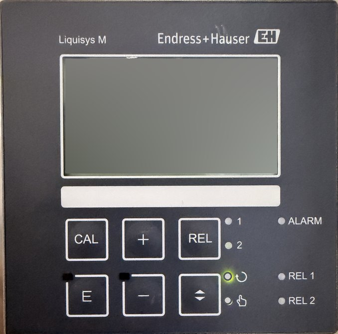

محوّل Endress+Hauser Liquisys M (CLM223/253) لقياس توصيلية المياه، بكيبادّه الحقيقي ومتوصل على حوض برج تبريد. اتعلّم الأول يعني إيه Conductivity وثابت الخلية وتعويض الحرارة، وبعدين اشتغل على الجهاز: اكتب الإعدادات، اعمل معايرة بمحلول قياسي، اضبط ريليه الـ Blowdown والخرج 4-20mA، واعمل أعطال واعرف تصلّحها.
المياه النقية جداً تقريباً مبتوصّلش كهربا. اللي بيخلّيها توصّل هو الأملاح الذايبة فيها: الملح بيتفكك لأيونات موجبة وسالبة (زي Na⁺ و Cl⁻)، والأيونات دي هي اللي بتشيل التيار بين قطبين. كل ما الأملاح تزيد، التوصيلية تزيد.
عشان كده الـ Conductivity أسرع وأرخص طريقة نعرف بيها نقاوة المياه أو تركيز محلول: في محطات المياه، والـ RO، والغلايات، وأبراج التبريد، وخطوط الـ CIP في مصانع الأغذية.
أبسط حساس هو حساس قطبين (Conductive, 2-electrode): قطبين معدن أو جرافيت بينهم مسافة. الجهاز بيطلّع جهد متردد (AC، عشان القطبين ميتأكسدوش ويتغطوا) ويقيس التيار، فيعرف التوصيل G بين القطبين.
بس التوصيل ده بيعتمد على شكل الحساس: لو القطبين أكبر أو أقرب لبعض التيار يزيد. عشان نشيل تأثير الشكل بنضرب في ثابت الخلية k:
κ = G × k k = L / A (cm⁻¹)
| ثابت الخلية k | المدى المناسب تقريباً | الاستخدام |
|---|---|---|
| 0.01 | 0.04 – 20 µS/cm | مياه فائقة النقاوة، مياه غلايات الضغط العالي |
| 0.1 | 0.5 – 200 µS/cm | خارج الـ RO، مياه مقطرة |
| 1 | 10 µS/cm – 20 mS/cm | مياه شرب، أبراج تبريد، مياه صرف |
| 10 | 1 – 200 mS/cm | محاليل مركّزة، مياه بحر |
في المحاليل الوسخة أو المركّزة جداً (حمض أو صودا الـ CIP) بيستخدموا الحساس الحثّي (Inductive / Toroidal): ملفين جوه جسم بلاستيك ومفيش معدن لامس المياه، فمبيتآكلش ولا بيتغطّى.
التوصيلية بتتغير كتير مع الحرارة: في أغلب المياه بتزيد حوالي 2% لكل درجة. يعني نفس المياه ممكن تقرا 1.00 mS/cm الصبح على 20°C و 1.20 mS/cm الضهر على 30°C، مع إن الأملاح ما اتغيرتش.
عشان نقارن صح، الجهاز بيحسب التوصيلية كأن المياه على 25°C (حرارة المرجع). ده اسمه تعويض الحرارة، والحرارة بتتقاس بحساس Pt100 أو Pt1000 جوه حساس الـ Conductivity نفسه. لما يكون شغال، الشاشة بتكتب ATC (Automatic Temperature Compensation). لو كتبت الحرارة بإيدك بدل الحساس بتبقى MTC.
κ25 = κT / (1 + α × (T − 25))
α = معامل الحرارة بالـ %/K. للمياه العادية حوالي 2.0 – 2.1. مثال: المياه على 33.7°C وبتقرا من غير تعويض 0.234 mS/cm، مع α = 2.1:
0.234 / (1 + 0.021 × 8.7) = 0.234 / 1.183 = 0.198 mS/cm
مع الوقت الحساس بيتغطّى بطبقة (كلس أو بيوفيلم) فثابت الخلية الفعلي بيتغير والقراءة تقل. عشان كده بنعمل معايرة: نغطّس الحساس في محلول معروف توصيليته، والجهاز يحسب ثابت الخلية الجديد.
| الزرار / اللمبة | بيعمل إيه |
|---|---|
| CAL | يدخل المعايرة. أثناءها الجهاز في HOLD. |
| E | من شاشة القياس يدخل قايمة الإعدادات. جوه القايمة يأكّد القيمة ويروح للي بعدها. |
| + و − | في شاشة القياس يقلبوا بين القراءات. في الإعدادات يغيّروا القيمة (امسك عشان يسرّع). الاتنين مع بعض = خروج لشاشة القياس. |
| ⇕ (AUTO/MANUAL) | يقلب الريليهات بين أوتوماتيك (لمبة ↻) ويدوي (لمبة ☝). |
| REL | في اليدوي يختار الريليه (لمبة 1 أو 2)، وبـ + و − تشغّله أو تطفيه. مفيد عشان تجرّب البلف أو الإنذار من غير ما تستنى المياه. |
| REL 1 / REL 2 | بتنوّر لما الريليه شغال (الكونتاكت مقفول). |
| ALARM | بتنوّر لما فيه عطل (حساس، كابل، قراءة برّه المدى) بعد زمن التأخير. |
| MEAS / ATC على الشاشة | MEAS = شاشة القياس العادية. ATC = تعويض الحرارة من الحساس، MTC = حرارة مكتوبة يدوي. |
الإعدادات متقسّمة جروبات بحروف، وكل وظيفة ليها كود بيظهر تحت على الشمال في الشاشة:
أكواد الوظايف وترتيبها هنا مبسّطة للتدريب. على الجهاز الحقيقي فيه جروبات ووظايف أكتر وبيطلب كود دخول، فارجع لكتالوج Liquisys M الرسمي قبل الضبط على ماكينة.
في برج التبريد المياه بتتبخر، والبخار بيطلع نقي ويسيب الأملاح ورا. فالأملاح بتتركّز والتوصيلية تعلى، ولو سيبناها هيترسّب كلس في المبادلات والمواسير.
الحل: لما التوصيلية توصل حد معيّن (مثلاً 1.60 mS/cm) الجهاز يقفل ريليه 1 فيفتح بلف الـ Blowdown يصرّف شوية مياه مركّزة، والعوّامة تعوّضها بمياه جديدة (Make-up) خفيفة، فالتوصيلية تنزل. لما توصل 1.40 الريليه يفصل والبلف يقفل. الفرق بين النقطتين اسمه الهيستيريسيس، ومن غيره البلف هيفتح ويقفل كل ثانية.
معامل التركيز (Cycles of concentration) = توصيلية البرج ÷ توصيلية الـ Make-up. لو الـ Make-up 0.30 mS/cm والبرج شغال على 1.50 يبقى 5 Cycles. كل ما الـ Cycles تزيد بتوفّر مياه، بس خطر الكلس بيزيد.
والخرج 4-20mA بيروح للـ PLC أو الـ SCADA عشان يسجّل ويرسم ترند. مثلاً لو المدى 0 – 2.00 mS/cm: 4mA = صفر، 12mA = 1.00، و 20mA = 2.00.
| العَرَض | السبب الغالب | الحل |
|---|---|---|
| القراءة قريبة من الصفر فجأة + ALARM | الحساس طلع من المياه أو فيه فقاعة هوا كبيرة | تأكد إن المياه مغطّياه والخط مليان |
| القراءة بتقل بالتدريج على أسابيع | الحساس اتغطّى بكلس أو بيوفيلم | نضّف واعمل معايرة. لو المعايرة رفضت يبقى غيّره |
| القراءة بتطلع وتنزل مع الحرارة | التعويض مقفول أو α غلط | شغّل التعويض الخطي وظبط α (B3 و B4) |
| الحرارة بتقرا رقم غريب + إنذار | حساس الحرارة Pt100 مفصول أو مقصور | راجع الكابل، أو حط MTC مؤقتاً لحد ما تصلّح |
| القراءة كلها غلط بنسبة ثابتة | ثابت الخلية المكتوب مش زي شهادة الحساس | اكتب k من الشهادة (A2) أو اعمل معايرة |
| القراءة فوق المدى جداً | قصر في كابل الحساس أو مياه داخلة في الكونكتور | افصل وقيس الكابل ونشّف الكونكتور |
| البلف بيفتح ويقفل بسرعة | نقطة التشغيل والإطفاء قريبين قوي | كبّر الهيستيريسيس أو زوّد تأخير الريليه |

الحساس المركّب ثابته الحقيقي من الشهادة k = 1.047 cm⁻¹، والجهاز جاي من المصنع على 1.000.
كل خطوة بتتعلّم ✓ لوحدها أول ما تعملها في المحاكي. افتح تاب المحاكي جنبها أو اقلب بينهم.
نفس اللي في الكيباد. أي تغيير هنا بيبان على الجهاز والعكس. الكود اللي باللون البرتقالي اتغيّر عن المصنع.
| الكود | الوظيفة | القيمة | المصنع | شرح |
|---|